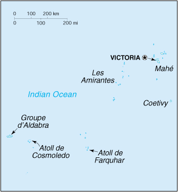

{kind=link}


| Seychelles |
|
|  | |
| Introduction |
Background: A lengthy struggle between France and Great Britain for the islands ended in 1814, when they were ceded to the latter. Independence came in 1976. Socialist rule was brought to a close with a new constitution and free elections in 1993.
| Geography |
Location: Eastern Africa, group of islands in the Indian Ocean, northeast of Madagascar
Geographic coordinates: 4 35 S, 55 40 E
Map references: Africa
Area:
total:
455 sq km
land:
455 sq km
water:
0 sq km
Area - comparative: 2.5 times the size of Washington, DC
Land boundaries: 0 km
Coastline: 491 km
Maritime claims:
continental shelf:
200 nm or to the edge of the continental margin
exclusive economic zone:
200 nm
territorial sea:
12 nm
Climate: tropical marine; humid; cooler season during southeast monsoon (late May to September); warmer season during northwest monsoon (March to May)
Terrain: Mahe Group is granitic, narrow coastal strip, rocky, hilly; others are coral, flat, elevated reefs
Elevation extremes:
lowest point:
Indian Ocean 0 m
highest point:
Morne Seychellois 905 m
Natural resources: fish, copra, cinnamon trees
Land use:
arable land:
2%
permanent crops:
13%
permanent pastures:
0%
forests and woodland:
11%
other:
74% (1993 est.)
Irrigated land: NA sq km
Natural hazards: lies outside the cyclone belt, so severe storms are rare; short droughts possible
Environment - current issues: water supply depends on catchments to collect rain water
Environment - international agreements:
party to:
Biodiversity, Climate Change, Desertification, Endangered Species, Hazardous Wastes, Law of the Sea, Marine Dumping, Nuclear Test Ban, Ozone Layer Protection, Ship Pollution, Whaling
signed, but not ratified:
Climate Change-Kyoto Protocol
Geography - note: 40 granitic and about 50 coralline islands
| People |
Population: 79,326 (July 2000 est.)
Age structure:
0-14 years:
29% (male 11,499; female 11,338)
15-64 years:
65% (male 25,143; female 26,386)
65 years and over:
6% (male 1,674; female 3,286) (2000 est.)
Population growth rate: 0.49% (2000 est.)
Birth rate: 17.99 births/1,000 population (2000 est.)
Death rate: 6.74 deaths/1,000 population (2000 est.)
Net migration rate: -6.3 migrant(s)/1,000 population (2000 est.)
Sex ratio:
at birth:
1.03 male(s)/female
under 15 years:
1.01 male(s)/female
15-64 years:
0.95 male(s)/female
65 years and over:
0.51 male(s)/female
total population:
0.93 male(s)/female (2000 est.)
Infant mortality rate: 17.74 deaths/1,000 live births (2000 est.)
Life expectancy at birth:
total population:
70.41 years
male:
64.87 years
female:
76.12 years (2000 est.)
Total fertility rate: 1.85 children born/woman (2000 est.)
Nationality:
noun:
Seychellois (singular and plural)
adjective:
Seychelles
Ethnic groups: Seychellois (mixture of Asians, Africans, Europeans)
Religions: Roman Catholic 90%, Anglican 8%, other 2%
Languages: English (official), French (official), Creole
Literacy:
definition:
age 15 and over can read and write
total population:
58%
male:
56%
female:
60% (1971 est.)
| Government |
Country name:
conventional long form:
Republic of Seychelles
conventional short form:
Seychelles
Data code: SE
Government type: republic
Capital: Victoria
Administrative divisions: 23 administrative districts; Anse aux Pins, Anse Boileau, Anse Etoile, Anse Louis, Anse Royale, Baie Lazare, Baie Sainte Anne, Beau Vallon, Bel Air, Bel Ombre, Cascade, Glacis, Grand' Anse (on Mahe), Grand' Anse (on Praslin), La Digue, La Riviere Anglaise, Mont Buxton, Mont Fleuri, Plaisance, Pointe La Rue, Port Glaud, Saint Louis, Takamaka
Independence: 29 June 1976 (from UK)
National holiday: National Day, 18 June (1993) (adoption of the constitution)
Constitution: 18 June 1993
Legal system: based on English common law, French civil law, and customary law
Suffrage: 17 years of age; universal
Executive branch:
chief of state:
President France Albert RENE (since 5 June 1977); note - the president is both the chief of state and head of government
head of government:
President France Albert RENE (since 5 June 1977); note - the president is both the chief of state and head of government
cabinet:
Council of Ministers appointed by the president
elections:
president elected by popular vote for a five-year term; election last held 20-22 March 1998 (next to be held by NA 2003)
election results:
France Albert RENE reelected president; percent of vote - France Albert RENE (SPPF) 66.7%, Wavel RAMKALAWAN (UO) 19.5%, Sir James MANCHAM (DP) 13.8%
Legislative branch:
unicameral National Assembly or Assemblee Nationale (35 seats - 25 elected by popular vote, 10 allocated on a proportional basis to parties winning at least nine percent of the vote; members serve five-year terms)
elections:
last held 20-22 March 1998 (next to be held by NA 2003)
election results:
percent of vote by party - NA; seats by party (elected) - SPPF 24, DP 1; seats by party (awarded) - SPPF 6, DP 1, UO 3
note:
the 10 awarded seats are apportioned according to the share of each party in the total vote
Judicial branch: Court of Appeal, judges are appointed by the president; Supreme Court, judges are appointed by the president
Political parties and leaders: Democratic Party or DP [leader NA]; New Democratic Party [Christopher GILL (former member of DP)]; Seychelles People's Progressive Front or SPPF [France Albert RENE] - the governing party; United Opposition or UO [Wavel RAMKALAWAN] - a coalition of the following parties: Seychelles Party or PS [Wavel RAMKALAWAN], Seychelles Democratic Movement or MSPD [Jacques HONDOUL], and Seychelles Liberal Party or SLP [Ogilvie BERLOUIS]
Political pressure groups and leaders: Roman Catholic Church; trade unions
International organization participation: ACCT, ACP, AfDB, C, ECA, FAO, G-77, IBRD, ICAO, ICFTU, ICRM, IFAD, IFC, IFRCS, ILO, IMF, IMO, InOC, Intelsat (nonsignatory user), Interpol, IOC, ISO (correspondent), NAM, OAU, OPCW, SADC, UN, UNCTAD, UNESCO, UNIDO, UPU, WCL, WHO, WMO, WToO, WTrO (applicant)
Diplomatic representation in the US:
chief of mission:
Ambassador Harold Walter GEISEL
chancery:
800 Second Avenue, Suite 400C, New York, NY 10017
telephone:
[1] (212) 972-1785
FAX:
[1] (212) 972-1786
Diplomatic representation from the US: the US does not have an embassy in Seychelles; the ambassador to Mauritius is accredited to Seychelles
Flag description: five oblique bands of blue (hoist side), yellow, red, white, and green (bottom) radiating from the bottom of the hoist side
| Economy |
Economy - overview: Since independence in 1976, per capita output in this Indian Ocean archipelago has expanded to roughly seven times the old near-subsistence level. Growth has been led by the tourist sector, which employs about 30% of the labor force and provides more than 70% of hard currency earnings, and by tuna fishing. In recent years the government has encouraged foreign investment in order to upgrade hotels and other services. At the same time, the government has moved to reduce the dependence on tourism by promoting the development of farming, fishing, and small-scale manufacturing. The vulnerability of the tourist sector was illustrated by the sharp drop in 1991-92 due largely to the Gulf war. Although the industry has rebounded, the government recognizes the continuing need for upgrading the sector in the face of stiff international competition. Other issues facing the government are the curbing of the budget deficit and further privatization of public enterprises. Growth slowed in 1998-99, due to sluggish tourist and tuna sectors.
GDP: purchasing power parity - $590 million (1999 est.)
GDP - real growth rate: 1.8% (1999 est.)
GDP - per capita: purchasing power parity - $7,500 (1999 est.)
GDP - composition by sector:
agriculture:
4%
industry:
21%
services:
75% (1996)
Population below poverty line: NA%
Household income or consumption by percentage share:
lowest 10%:
NA%
highest 10%:
NA%
Inflation rate (consumer prices): 3% (1999)
Labor force: 26,000 (1996)
Labor force - by occupation: industry 19%, services 57%, government 14%, fishing, agriculture, and forestry 10% (1989)
Unemployment rate: NA%
Budget:
revenues:
$220 million
expenditures:
$241 million, including capital expenditures of $36 million (1994 est.)
Industries: fishing; tourism; processing of coconuts and vanilla, coir (coconut fiber) rope, boat building, printing, furniture; beverages
Industrial production growth rate: NA%
Electricity - production: 125 million kWh (1998)
Electricity - production by source:
fossil fuel:
100%
hydro:
0%
nuclear:
0%
other:
0% (1998)
Electricity - consumption: 116 million kWh (1998)
Electricity - exports: 0 kWh (1998)
Electricity - imports: 0 kWh (1998)
Agriculture - products: coconuts, cinnamon, vanilla, sweet potatoes, cassava (tapioca), bananas; broiler chickens; tuna fish
Exports: $91 million (f.o.b., 1998)
Exports - commodities: fish, cinnamon bark, copra, petroleum products (reexports)
Exports - partners: France, UK, Netherlands, Italy, China, Germany, Japan
Imports: $403 million (c.i.f., 1998)
Imports - commodities: machinery and equipment, foodstuffs, petroleum products
Imports - partners: South Africa, UK, China, Singapore, France, Italy
Debt - external: $149 million (1997 est.)
Economic aid - recipient: $16.4 million (1995)
Currency: 1 Seychelles rupee (SRe) = 100 cents
Exchange rates: Seychelles rupees (SRe) per US$1 - 5.3060 (September 1999), 5.2622 (1998), 5.0263 (1997), 4.9700 (1996), 4.7620 (1995)
Fiscal year: calendar year
| Communications |
Telephones - main lines in use: 17,844 (1997)
Telephones - mobile cellular: 2,249 (1997)
Telephone system:
domestic:
radiotelephone communications between islands in the archipelago
international:
direct radiotelephone communications with adjacent island countries and African coastal countries; satellite earth station - 1 Intelsat (Indian Ocean)
Radio broadcast stations: AM 1, FM 2, shortwave 2 (1998)
Radios: 42,000 (1997)
Television broadcast stations: 2 (plus 9 repeaters) (1997)
Televisions: 11,000 (1997)
Internet Service Providers (ISPs): 1 (1999)
| Transportation |
Railways: 0 km
Highways:
total:
280 km
paved:
176 km
unpaved:
104 km (1996 est.)
Ports and harbors: Victoria
Merchant marine: none (1999 est.)
Airports: 14 (1999 est.)
Airports - with paved runways:
total:
6
1,524 to 2,437 m:
1
914 to 1,523 m:
3
under 914 m:
2 (1999 est.)
Airports - with unpaved runways:
total:
8
914 to 1,523 m:
4
under 914 m:
4 (1999 est.)
| Military |
Military branches: Army, Coast Guard, Marines, air wing, National Guard, Presidential Protection Unit, Police Force
Military manpower - availability:
males age 15-49:
22,677 (2000 est.)
Military manpower - fit for military service:
males age 15-49:
11,345 (2000 est.)
Military expenditures - dollar figure: $13 million (FY93)
Military expenditures - percent of GDP: 2.8% (FY93)
| Transnational Issues |
Disputes - international: claims Chagos Archipelago in British Indian Ocean Territory